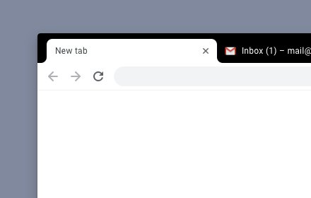

Watch Marvel scenes in order
Every scene in the Marvel Cinematic universe, in chronological order
Based on this blog post by Tony Goldmark, Chronological MCU lets you play every scene in the Marvel Cinematic Universe in chronological order.
Just press play and you'll automatically be taken to every scene, in every MCU movie1 in chronological order, just as they occur in the universe.
Getting started
Install Chronological MCU
Open a new tab
Press play
Requirements
- This extension is for Google Chrome only
- Must have a Disney+ account and a Netflix account logged
How it works
Chronological MCU uses Tony Goldmark's list, and navigates to the Disney+ or (Netflix) page of each MCU movie. Chronological MCU will then fast-forward (or rewind) to the correct spot, and then jump to the next movie when the scene is over.
Use the controls to restart the clip, skip to the next clip, or stop playing

Troubleshooting
If Netflix is takes a while to get to the correct start time, open the popup menu to check when the clip starts, and manually set the movie's time in Netflix's playback controls.